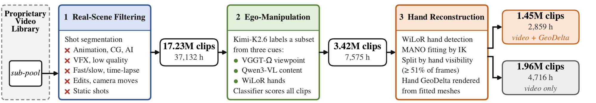
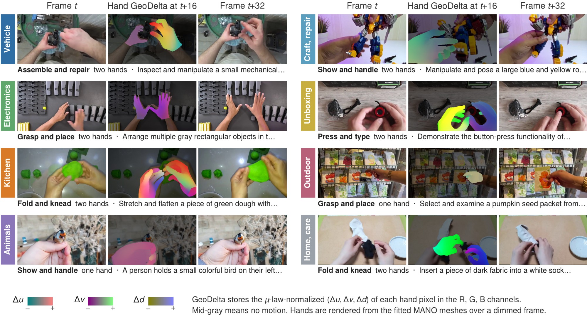
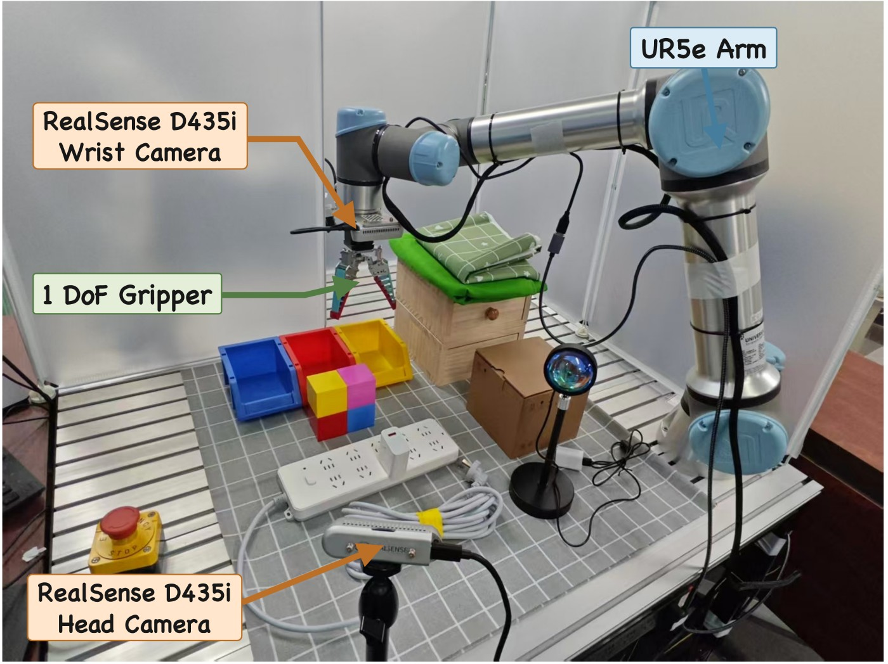

At a glance
Predict the 4D motion. Read it where and when it matters.
Gnomon4D jointly denoises future video, the explicit 4D motion of the robot and the manipulated objects (GeoDelta), and a 32-step action chunk. The action reads that motion where the object moves against the embodiment, and when that relation turns, such as at grasp and release.
1GeoDelta
Explicit 4D motion as the predicted future
For every robot and object pixel, where that point moves in the image and in depth. The frozen video VAE encodes it next to the future frames.
2InSAttn + TransAgg
Where and when the action reads that motion
Relative motion between object and embodiment selects where to read; changes in that relation select when.
3EgoManip-5000H
Human video through the same motion space
5,000+ hours of human video pretrain the world experts. Hands and grippers share GeoDelta, so no retargeting is needed.
94.33
% avg. success
RoboTwin 2.0 · 50 tasks
62.5
% avg. over five tracks
VLABench · +7.4 on unseen textures
23.86
% success · 2.0× the SOTA WAM
RoboDojo · 28.24 on Precision
82.5/78.0
% ID / OOD
Real UR5e · +7.0 / +16.0 over the SOTA baseline
The video
The whole story in under seven minutes.
01 / Motivation
Geometry helps manipulation. Does the action read it?
A world–action model (WAM) predicts, from the current observation and an instruction, future frames and the actions that produce them. Recent WAMs add 3D or 4D geometry to that future. This chapter compares how they use it, what control depends on, and where their actions look.
- 1.1Three routes to geometry
- 1.2What control depends on
- 1.3Where current WAMs look
Three routes: how geometry serves the action.
Existing methods agree that geometry helps manipulation, but mostly ask how to model it. Fewer ask how the action policy should read and use it.
Geometry-enhanced video
Geometry on the side: training supervision
WAM4D · X-WAM · VPM · MECo-WAM
Dense geometry, mostly redundant for the action
Geometry as control interface
Geometry in the middle: an explicit hand-off
PointAction · Dream2Flow
Geometry and action are learned apart
Native geometry modeling
Geometry as the backbone: 3D modeling
UNITAS · VGA · GAM · PointWAM
3D training data is small in scale
Can a WAM focus on the geometry that matters, fuse it with the predicted video, and keep it general across embodiments, so that the action actually reads it?
Manipulation turns on a few interactions.
Success or failure depends on a few key interactions. In space, they are the regions where the embodiment and the object move relative to each other. In time, they are the moments when that relation changes, such as grasp and release.
Space · whereRelative motion between gripper and object is high while the gripper approaches and closes, and drops once both move together.
Time · whenThe change in relative motion peaks at grasp and release, the frames that decide the next action.
The interaction supplies the cue; the task decides which of it should enter the action.
Computed from the ground-truth GeoDelta of a RoboTwin 2.0 demonstration (Stack Blocks Two). Section 2.2 defines c and r; in the model they come from the predicted motion.
Where do current WAMs look?
We probe released WAMs with frozen weights on 50 RoboTwin 2.0 event windows, one per task. Their action attention spreads over the arm. The interaction region, the manipulated object plus the embodiment within 3 cm of contact, matters most for control yet receives the least: 1.18–1.52× uniform, against 1.82–2.30× on the rest of the arm.
Gnomon4D answers with explicit 4D motion: it tells the action where the interaction is and when it turns.
02 / Method
One model, three futures.
Gnomon4D denoises future video, future GeoDelta and a 32-step action chunk together, through joint attention between three experts. The numbered parts of the diagram are explained in order below.
- 2.1GeoDelta
- 2.2Where and when to read
- 2.3Human-video pretraining
- 2.4Actions before video
Observation
Instruction
+ depth, foreground mask, proprioception
Pretraining
5,000+ h human video, then 30+ h robot video
Video expert
8 future frames
GeoDelta expert
8 frames of (Δu, Δv, Δd)
Action expert
32-step action chunk
joint attention
Future video
Future GeoDelta
Action chunk
Synchronized views of a RoboTwin 2.0 demonstration (Stack Blocks Two): the observation, and the video and GeoDelta 24 control steps ahead that the experts learn to predict (ground truth). The action curves are the 14 joint targets of a 32-step chunk from the same demonstration.
Follow each point. Measure its 4D motion.
For every pixel on the robot and the manipulated objects, GeoDelta stores where that same physical point moves four control steps later: image-plane displacement and depth change, (Δu, Δv, Δd). It has the pixel grid of the video, so the frozen video VAE encodes it, and the GeoDelta expert predicts it next to the future frames.
- Foreground pixelsevery pixel on the arm, the gripper and the manipulated object
- Lift to 3Dback-project with depth and camera intrinsics
- Find the same point four steps latermove it with the rigid motion of its link or object
- Project both into the source cameraso camera motion cancels out
- Take the differenceimage-plane displacement and depth change
Motion, not appearance or single-frame depth.
RGB mixes motion with texture, lighting and background. Depth adds geometry, but one frame at a time: it shows where surfaces are, not which point went where. Every GeoDelta value links two moments of the same physical point.
vs. optical flowΔd captures motion along the line of sight, which 2D flow cannot see.
vs. depthevery GeoDelta value links two moments of the same physical point.
One definition across domains, one video codec.
The same definition holds in simulation and on the real robot; only the source of the motion differs. Each clip shows the RGB view, GeoDelta as point tracks, and the same GeoDelta encoded as the color video that the frozen video VAE reads: parts at rest are mid-gray.
Each component is soft-thresholded, normalized by a fixed scale and mapped to an 8-bit channel by signed μ-law companding, so GeoDelta stays pixel-aligned with the future video. μ = 31 spends more intensity levels on small displacements, which keeps the fine motion near contact.
Read where the object moves against the hand, and when that changes.
Joint attention sees every future token but not which ones matter. Interaction-Salient Attention (InSAttn) reads where object and embodiment motion differ: while the gripper approaches, the block stays still and the relative motion c is high; once grasped they move together and c drops. Transition-Anchored Aggregation (TransAgg) weights frames by how much c changes, so grasp and release dominate the readout given to the Action expert.
Where · Interaction-Salient Attention
c is near 1 where object and embodiment move relative to each other and near 0 where they move together. A small MLP scores each token from c given the instruction and proprioception, and the saliency s reweights each query's attention within a frame.
When · Transition-Anchored Aggregation
Each of the K = 32 queries pools its per-frame readouts over time, weighted by how much c changes on salient tokens, so grasp and release frames dominate. The resulting tokens enter the Action expert through residual cross-attention.
Attention flips.
The same probe as in 1.3. With InSAttn and TransAgg, attention on the interaction region rises to 2.42× uniform and the rest of the arm falls below uniform, to 0.74×.
One motion space for hands and grippers.
GeoDelta describes how surfaces move, not how a body is controlled. A human hand and a robot gripper share one supervision space with no retargeting, so action-free human video can teach the world experts how an embodiment interacts with objects.
- 5,000+ hhuman video, EgoManip-5000H · Video and GeoDelta experts
- 30+ hdual-arm robot video, Robot-30H: 10,500 teleoperated trajectories, 53 tasks, six kinds of real scenes · Action expert added
- Post-trainone policy per benchmark
How EgoManip-5000H is built.
EgoManip-5000H is mined from a sub-pool of a large video library in three stages: real-scene filtering, an ego-manipulation classifier, and a split by hand visibility. Hand-visible clips supervise both the Video and GeoDelta experts; the hand GeoDelta is rendered from fitted MANO meshes after compensating camera rotation. Interaction types: bimanual 45.4%, tool use 18.9%, deformable objects 17.8%.
| Stage | Clips | Hours | Supervises |
|---|---|---|---|
| 1 · Real-scene filtering | 17.23M | 37,132 | – |
| 2 · Ego-manipulation classifier | 3.42M | 7,575 | – |
| 3 · Hands visible | 1.45M | 2,859 | Video, GeoDelta |
| 3 · Hands rarely visible | 1.96M | 4,716 | Video |


Actions are ready before the video.
GeoDelta and actions run on a denoising clock twice as fast as video. After 10 of 20 solver steps they are clean, the robot executes, and the video keeps refining only when a visual prediction is needed.
The ground-truth future video and GeoDelta of a RoboTwin 2.0 demonstration (Stack Blocks Two), playing; the noise level follows the schedule above, the noise itself is illustrative.
03 / Results
First on three simulation benchmarks and a real robot.
The lead is largest where appearance changes or precision matters: +7.4 on VLABench unseen textures, 2.0× the success of the SOTA WAM on RoboDojo, and +16.0 points under visual shifts on the real robot. Each benchmark below shows the numbers next to closed-loop rollouts.
- 3.1RoboTwin 2.0
- 3.2VLABench
- 3.3RoboDojo
- 3.4Real robot
- 3.5Ablations
RoboTwin 2.0: 50 bimanual tasks, clean and randomized.
94.33% avg.
One multitask policy, closed loop, first in both settings: +1.71 over MECo-WAM, the SOTA geometry- or flow-based WAM, and +0.77 over the structured-readout STARRY. Rollouts show the executed head camera next to the prediction 24 control steps ahead.
| Method | Clean | Rand. | Avg. |
|---|---|---|---|
| VLA | |||
| π0.5 | 82.74 | 76.76 | 79.75 |
| Galaxea G-0.5 | 93.72 | 92.84 | 93.28 |
| Qwen-RobotManip | 93.70 | 94.00 | 93.85 |
| WAM · RGB futures | |||
| Motus | 88.66 | 87.02 | 87.84 |
| Fast-WAM | 91.88 | 91.78 | 91.83 |
| LingBot-VA 2.0 | 93.80 | 93.40 | 93.60 |
| OpenWAM-Alpha | 93.74 | 93.46 | 93.60 |
| Method | Clean | Rand. | Avg. |
|---|---|---|---|
| WAM · 3D geometry / flow | |||
| X-WAM | 89.76 | 90.68 | 90.22 |
| WAM4D | 93.82 | 89.86 | 91.84 |
| FlowWAM | 92.94 | 92.14 | 92.54 |
| MECo-WAM | 93.26 | 91.98 | 92.62 |
| WAM · structured readout | |||
| ARPS | 91.32 | 90.10 | 90.71 |
| STARRY | 93.82 | 93.30 | 93.56 |
| Gnomon4D | 94.56 | 94.10 | 94.33 |
Rollouts: episode 0 of every task in each setting, as recorded by the evaluator; ✕ marks the failed episodes, shown as they are.
VLABench: the lead grows as appearance changes.
62.5% avg. · +7.4 Tex
VLABench tests language and commonsense across ten task families on five tracks. The margin over OpenWAM-Alpha grows from 0.6 points in distribution to 7.4 under unseen textures, because GeoDelta encodes motion, not appearance.
| Method | ID | Cat | CS | Ins | Tex | Avg. |
|---|---|---|---|---|---|---|
| VLA | ||||||
| π0.5 | 65.4 | 38.2 | 43.9 | 48.2 | 44.9 | 48.1 |
| Xiaomi-Robotics-1 | 75.6 | 53.0 | 48.4 | 55.8 | 62.6 | 59.1 |
| WAM | ||||||
| OpenWAM-Alpha | 83.4 | 38.1 | 58.0 | 53.8 | 61.4 | 58.9 |
| Gnomon4D | 84.0 | 39.1 | 61.7 | 59.1 | 68.8 | 62.5 |
ID: in distribution · Cat: unseen categories · CS: commonsense · Ins: semantic instructions · Tex: unseen textures.
Successful closed-loop rollouts from the official evaluator, third-person camera, ×1. Where a scene succeeds in both tracks, its in-distribution rollout is followed by the same scene under unseen textures.
RoboDojo: twice the success of the SOTA WAM, and precise.
23.86% SR · 2.0×
RoboDojo spans 42 bimanual tasks over five dimensions. Gnomon4D doubles the success rate of OpenWAM-Alpha (23.86% vs. 11.92%) and reaches 28.24% on Precision against at most 20.42%: these tasks need exact positions both in the image plane and in depth, which GeoDelta encodes jointly.
| Method | Gen. | Prec. | Long | Mem. | Open | SR | Score |
|---|---|---|---|---|---|---|---|
| VLA | |||||||
| InternVLA-A1.5 | 6.83 | 10.17 | 13.75 | 3.56 | 1.42 | 7.14 | 11.15 |
| π0.5 | 8.17 | 5.50 | 14.67 | 4.67 | 1.67 | 6.93 | 11.44 |
| Xiaomi-Robotics-1 | 17.00 | 18.83 | 23.67 | 6.56 | 3.58 | 13.93 | 20.07 |
| Galaxea G-0.5 | 12.83 | 20.42 | 32.25 | 7.33 | 1.58 | 14.88 | 20.23 |
| WAM | |||||||
| Fast-WAM | 1.11 | 0.00 | 5.17 | 3.44 | 0.42 | 2.03 | 3.48 |
| GigaWorld-Policy-0 | 2.89 | 1.83 | 8.92 | 2.22 | 0.50 | 3.27 | 6.20 |
| X-WAM | 3.33 | 1.83 | 9.08 | 4.67 | 0.25 | 3.83 | 7.69 |
| OpenWAM-Alpha | 14.83 | 9.25 | 25.33 | 9.11 | 1.08 | 11.92 | 17.18 |
| Gnomon4D | 23.28 | 28.24 | 24.44 | 34.34 | 9.02 | 23.86 | 30.96 |
Successful closed-loop rollouts, one per task, head camera, ×2.
Real robot: first on every task, in and out of distribution.
82.5 / 78.0% ID / OOD
Setup
A UR5e arm with a parallel gripper, a fixed third-person RGB-D camera and a wrist camera. Five tasks cover routine, long-horizon and precision manipulation. All methods are trained on the same 50 demonstrations per task and evaluated from shared initial configurations.
- Tasks
- Routine Drawer Storage, Box Packing, Block Stacking · Long-horizon Color Sorting · Precision Charger Insertion
- Demonstrations
- 50 per task in freedrive mode; object and container placements vary within a 30×30 cm region
- Trials
- 80 per task and method: 40 in distribution, 40 under visual shifts, 10 for each of four factors
- Control
- 32-step action chunk on a 10 Hz grid; the first 16 steps run before replanning
Lightingcolored side illumination on the objects and workspace
Tableclothan unseen green plaid tablecloth
Appearanceunseen object appearance, such as new block colors
Distractorsadditional non-target objects in the workspace

Results
The baselines trade accuracy for robustness: FlowWAM leads them in distribution but loses 14.5 points under shifts. Gnomon4D loses 4.5, and its margin over the SOTA baseline widens from 7.0 to 16.0 points. The OOD gain is largest under unseen object appearance and distractors (18.0 points each), which leave GeoDelta unchanged: it does not depend on texture, and a static distractor contributes no motion.
Trials filmed with a phone camera, ×4. Labels give the visual shift of each OOD trial.
| Task · ID / OOD of 40 | Fast-WAM | X-WAM | FlowWAM | Gnomon4D |
|---|---|---|---|---|
| Drawer Storage | 32 / 26 | 33 / 31 | 34 / 32 | 36 / 35 |
| Box Packing | 24 / 20 | 28 / 25 | 30 / 26 | 33 / 31 |
| Block Stacking | 29 / 22 | 30 / 26 | 33 / 24 | 35 / 31 |
| Color Sorting | 21 / 16 | 23 / 20 | 29 / 21 | 32 / 30 |
| Charger Insertion | 11 / 10 | 23 / 22 | 25 / 19 | 29 / 29 |
| Total of 200 | 117 / 94 | 137 / 124 | 151 / 122 | 165 / 156 |
| OOD shift · of 50 | Fast-WAM | X-WAM | FlowWAM | Gnomon4D |
|---|---|---|---|---|
| Lighting | 24 | 31 | 31 | 39 |
| Tablecloth | 29 | 35 | 38 | 41 |
| Appearance | 18 | 27 | 25 | 36 |
| Distractors | 23 | 31 | 28 | 40 |
Where the gains come from.
Ten interaction-intensive RoboTwin 2.0 tasks, every variant post-trained for 20k steps. The three groups are cumulative and match the three parts of the method.
1(a) Future representation
80.0→83.4+3.4
Object motion matters more than re-encoding the arm.
Embodiment-only GeoDelta adds 0.7 over RGB; object motion adds another 2.7. Full GeoDelta also beats depth by 2.5 and 2D flow by 0.9.
2(b) Readout structure
83.6→86.2+2.6
Guiding where and when beats adding queries.
Generic queries only match dense readout (83.6 vs. 83.4). InSAttn adds 1.7 and TransAgg another 0.9.
3(c) Pretraining curriculum
86.2→91.0+4.8
Human video transfers through GeoDelta.
EgoManip-5000H pretraining adds 2.1; Robot-30H mid-training adds another 2.7.
| Variant | Clean | Rand. | Avg. |
|---|---|---|---|
| (a) Future representation, dense readout | |||
| RGB | 81.0 | 79.0 | 80.0 |
| RGB + Depth | 81.5 | 80.3 | 80.9 |
| RGB + 2D Flow | 83.1 | 81.9 | 82.5 |
| RGB + GeoDelta (Body) | 81.5 | 79.8 | 80.7 |
| RGB + GeoDelta (Full) | 83.8 | 82.9 | 83.4 |
| (b) Readout structure | |||
| Generic Queries | 84.2 | 82.9 | 83.6 |
| InSAttn Only | 85.7 | 84.8 | 85.3 |
| InSAttn + TransAgg | 86.6 | 85.7 | 86.2 |
| (c) Pretraining curriculum | |||
| Wan2.2-5B Init. (No Pretraining) | 86.6 | 85.7 | 86.2 |
| + EgoManip-5000H | 88.4 | 88.2 | 88.3 |
| + Robot-30H (Gnomon4D) | 91.3 | 90.6 | 91.0 |
04 / Gallery